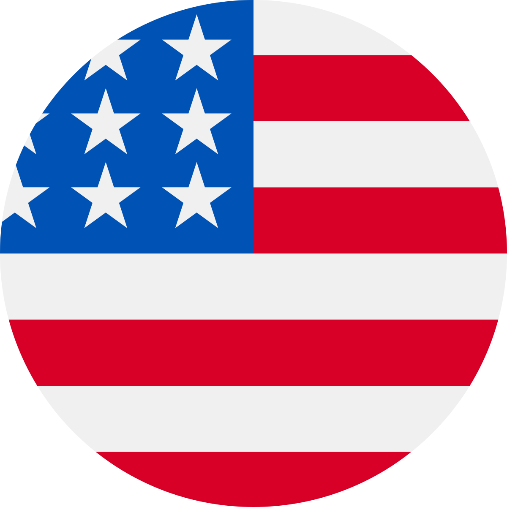

Chess

What is Chess ⤵️
Chess History ⤵️
How to play ⤵️
(in "check") whereby there is no way for it to escape. There are also several ways a game can end in a draw.
Board

Board 🙾
⬜️⬛️⬜️⬛️⬜️⬛️⬜️⬛️
⬛️⬜️⬛️⬜️⬛️⬜️⬛️⬜️
⬜️⬛️⬜️⬛️⬜️⬛️⬜️⬛️
⬛️⬜️⬛️⬜️⬛️⬜️⬛️⬜️
⬜️⬛️⬜️⬛️⬜️⬛️⬜️⬛️
⬛️⬜️⬛️⬜️⬛️⬜️⬛️⬜️
⬜️⬛️⬜️⬛️⬜️⬛️⬜️⬛️
⬛️⬜️⬛️⬜️⬛️⬜️⬛️⬜️
Pieces
King ♔
Queen ♛
Rook ♜
Bishop â™
Knight â™
Pawn ♟
Players 👤
Nona Gaprindashvili
(Georgian: ნონა გáƒáƒ¤áƒ ინდáƒáƒ¨áƒ•áƒ˜áƒšáƒ˜; born 3 May 1941)
is a former Soviet and Georgian chess player, and the first woman ever to be awarded the FIDE title Grandmaster in 1978. She was the fifth women's world chess champion (1962–1978).
Magnus Carlsen
Norwegian chess grandmaster who is the current No. 1 player in the FIDE world chess rankings. He has held this position since 1 July 2011 and trails only Garry Kasparov in time spent as the highest-rated player in the world.
Hikaru Nakamura 
an American chess grandmaster, Twitch streamer, YouTube content creator, five-time U.S. Chess Champion, and the reigning World Fischer Random Chess Champion. A chess prodigy, he earned his grandmaster title at the age of 15, the youngest American at the time to do so. With a peak rating of 2816, Nakamura is the tenth-highest rated player in history.